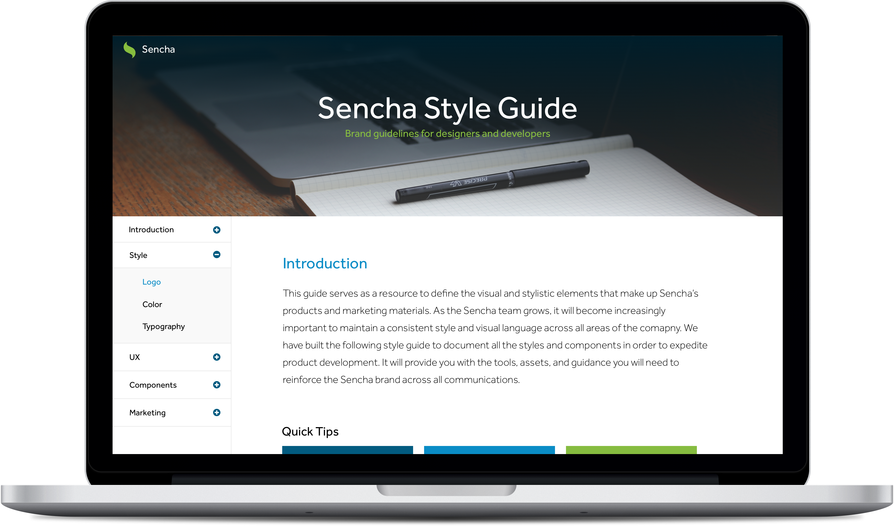
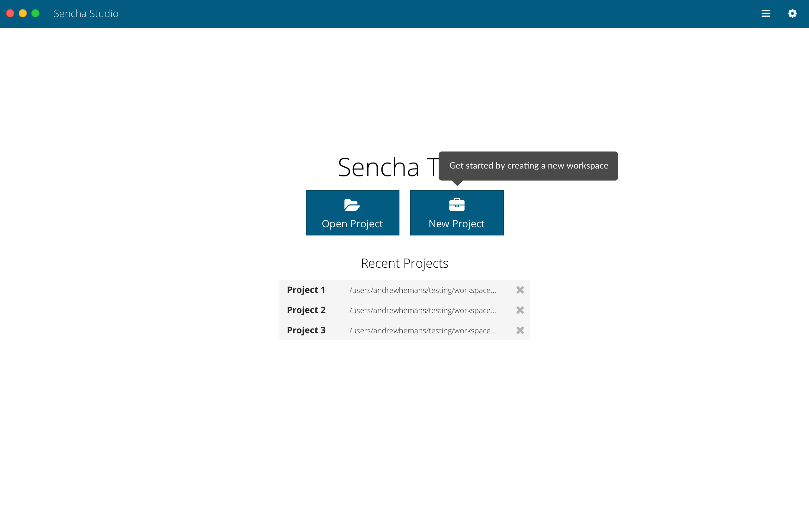
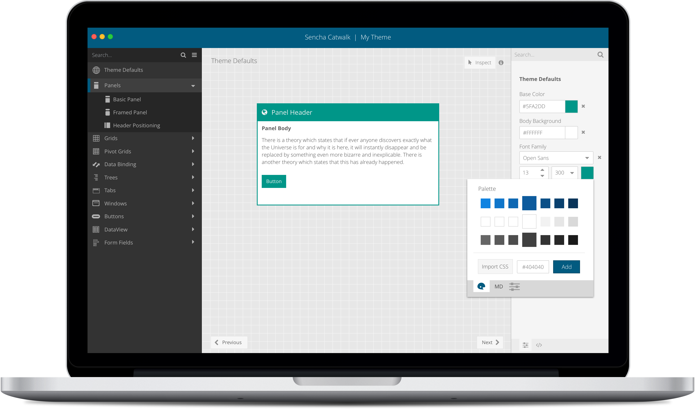
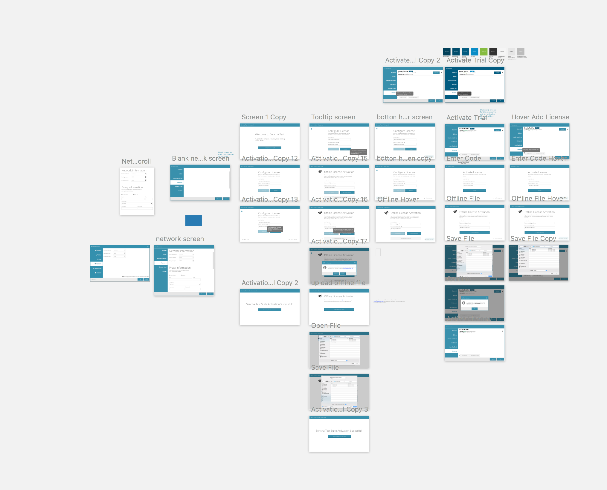
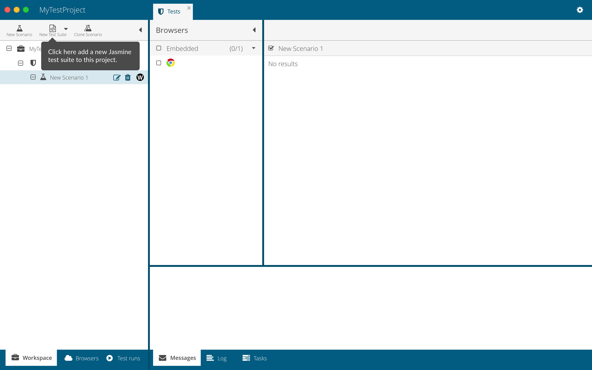

Designing developer tools at Sencha in the run-up to the company's acquisition, where polishing the products and tightening their experience directly shaped how the business was valued. This is where I grew from UX designer into a design lead.

Sencha builds JavaScript frameworks and developer tools used by enterprise engineering teams. In the period leading up to the company's acquisition, the priority was to mature the product experience: make the tools easier to adopt, smooth out the rough edges that tripped up new users, and present a polished, cohesive suite to both customers and potential acquirers.
I worked across products like Sencha Test, redesigning getting-started flows so users were no longer dropped onto confusing blank screens, clarifying how core actions like creating projects and test scenarios were surfaced, and adding guided walkthroughs to ease the first run. The throughline was reducing the friction that kept developers from feeling productive quickly.
I started at Sencha as a UX designer and grew into a design lead over my time there. The scope of my work widened accordingly.




Contact
I'm currently exploring design leadership and senior IC opportunities. If you're building something meaningful and want a design leader who can also build, I'd love to hear from you.